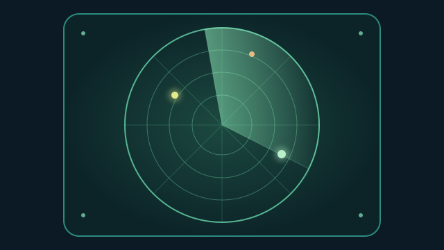
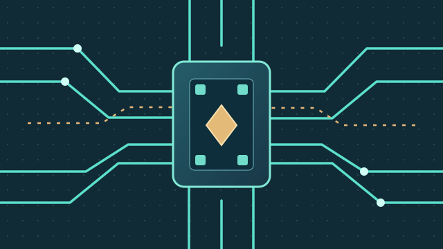
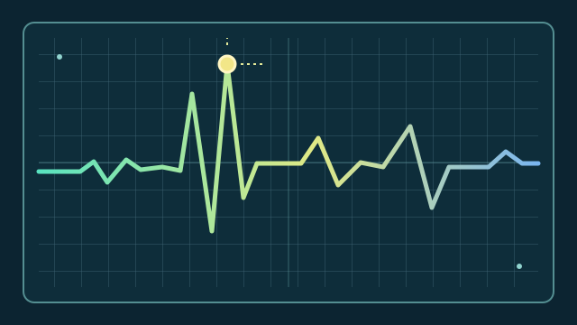
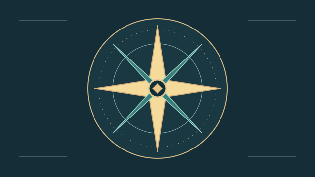
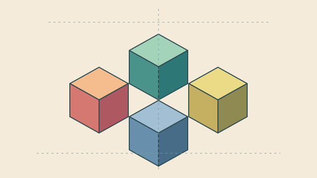

VG-007 · Radar Scope
雷达与探测仪表视觉
打开 SVG 源文件这些是可单独引用与编辑的 SVG 原图，不是绘制后无法复用的截图。模拟雷达和波形数据只用于视觉展示，没有接入真实传感器或数据服务。

雷达与探测仪表视觉
打开 SVG 源文件
硬件与技术品牌图形
打开 SVG 源文件游戏勋章与成就装饰
打开 SVG 源文件
合成遥测波形视觉
打开 SVG 源文件
导航、地图和编辑叙事
打开 SVG 源文件
模块产品与立方几何
打开 SVG 源文件